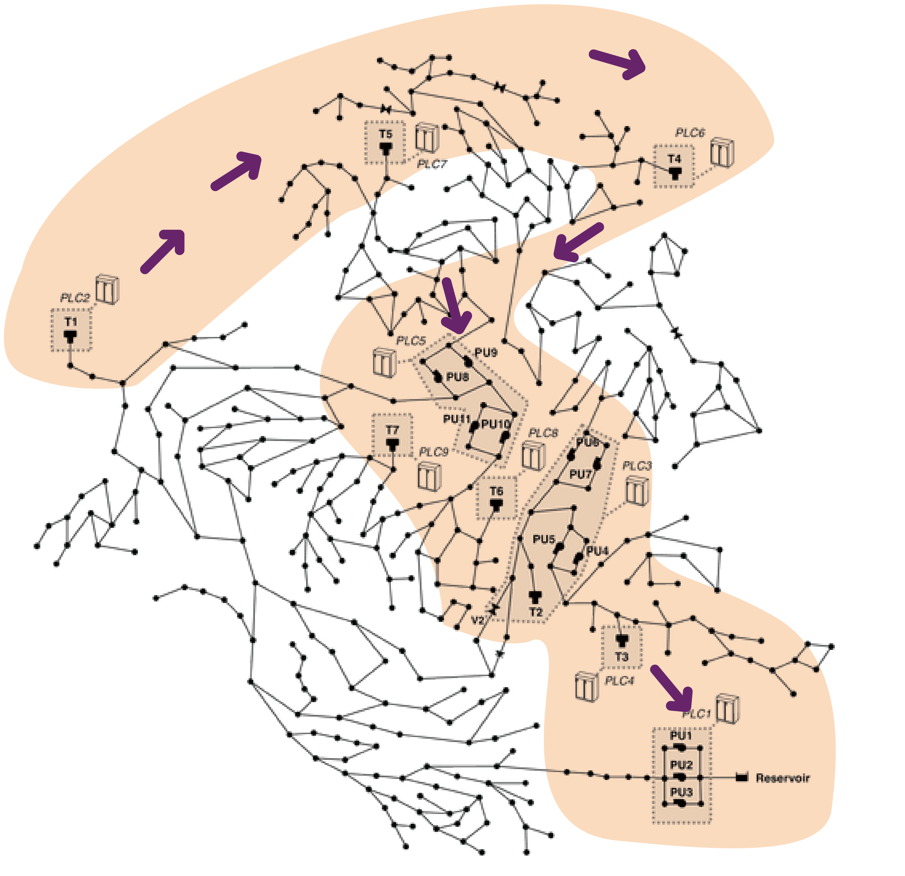

FIRST PROTOTYPE
Sonifications are built on two different layers.
At the first level, which stays at the background of the sonification, a different sound was chosen to represent each network’s component: tanks, pumps, valves and junctions.
The second layer is built upon punctual sounds, one for each variable associated with the component, i.e., water level for tanks, pressure and flow for valves and pumps, and so on.
The order in which sounds are played follows the geographic position of the components, reading the network’s map from left to right.
A pre-determined level of anomaly (low/medium/high) is associated to a distortion rate in each variable’s sound.
This Prototype includes two options designed using different sound content over the same mapping strategy.

At the first level, which stays at the background of the sonification, a different sound was chosen to represent each network’s component: tanks, pumps, valves and junctions.
The second layer is built upon punctual sounds, one for each variable associated with the component, i.e., water level for tanks, pressure and flow for valves and pumps, and so on.
The order in which sounds are played follows the geographic position of the components, reading the network’s map from left to right.
A pre-determined level of anomaly (low/medium/high) is associated to a distortion rate in each variable’s sound.
This Prototype includes two options designed using different sound content over the same mapping strategy.
OPTION [1]
Sonification
Sound-key
Background sound for network components:
Individual sounds for components' variable, with different levels of anomaly:
TANK STATUS:
PUMP STATUS:
VALVE STATUS:
JUNCTION STATUS:
OPTION [2]
Sonification
Sound-key
Background sound for network components:
Individual sounds components' variable:
Different level of noise for anomaly: